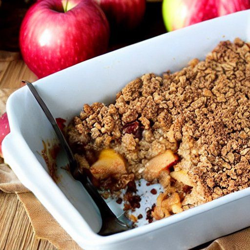

Croustade aux pommes
Portions: 8
Ingrédients
-
1 t de cassonnade

-
1 1/2 t de farine
-
1 3/4 t de flocons d'avoine
-
3/4 t de beurre dur
-
pommes coupées et épépinées
-
sucre
Instructions
Combiner la cassonade, la farine et les flocons d'avoine.
- 1 t de cassonnade
- 1 1/2 t de farine
- 1 3/4 t de flocons d'avoine
Couper 3/4 t de beurre dur à l'aide d'un mélangeur à pâte ou de deux couteaux dans le premier mélange jusqu'à ce le beurre soit grossièrement défait.
Dans un bol 9 par 13 po, remplir aux deux tiers de pommes coupées et épépinées et saupoudrer de sucre au goût.
Verser le mélange de gruau sur les pommes.
Cuire à 180 °C (350 °F) pendant 30 minutes ou jusqu'à doré.